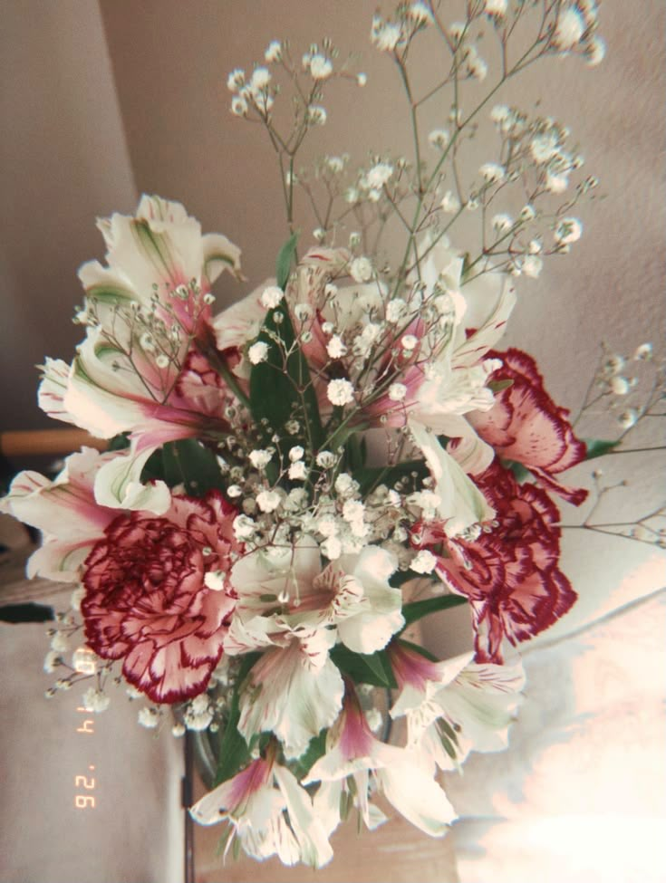
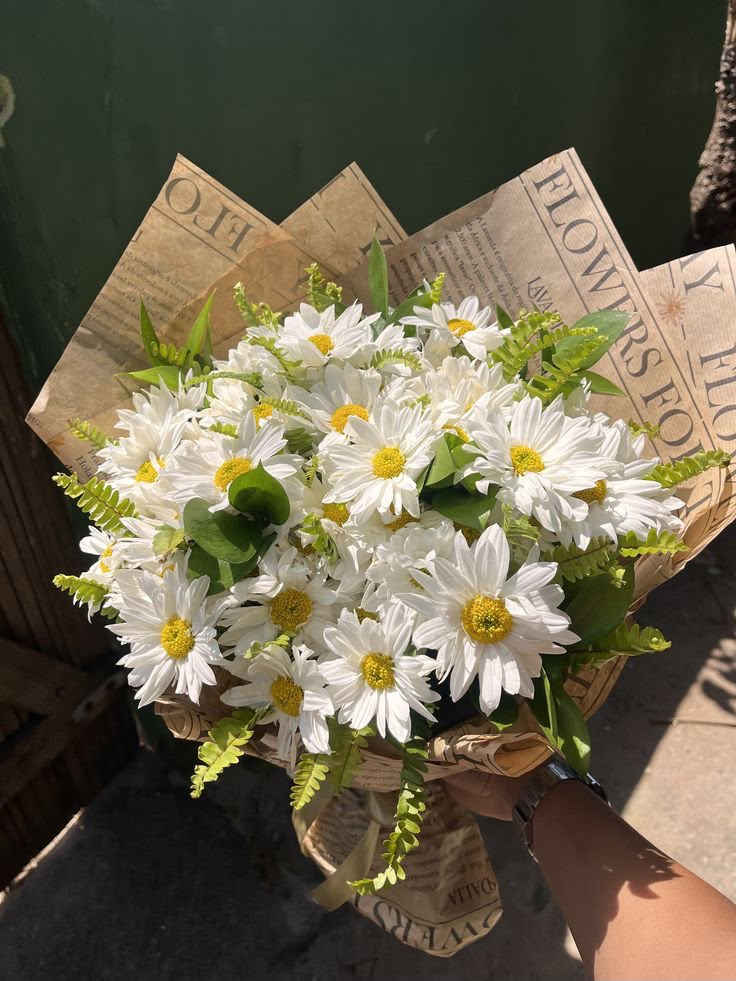
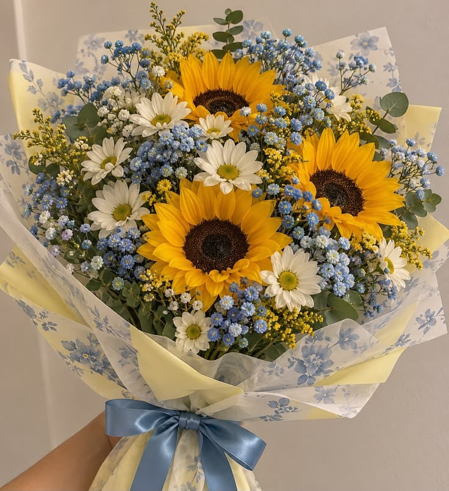
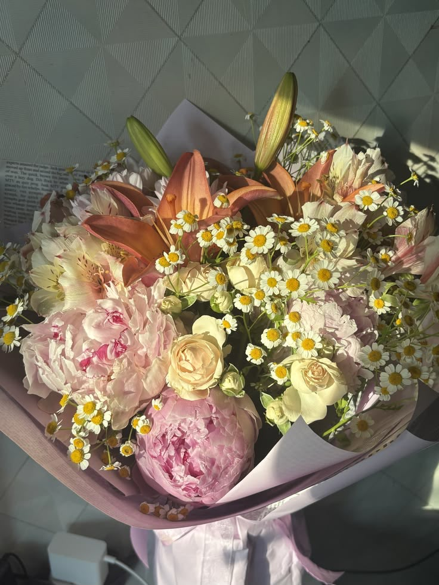

.png) SHIBUYA GRAND FLORIST
SHIBUYA GRAND FLORIST
SHIBUYA GRAND FLORIST
SHIBUYA GRAND FLORIST
Na Shibuya Grand Florist (Midori no Hibi - 緑の日々), cada buquê é criado como uma verdadeira obra de arte botânica. Do coração de Shibuya diretamente para quem você ama, selecionamos a dedo as flores mais frescas para transformar momentos comuns em memórias inesquecíveis.






Buquês Exclusivos: Criados com combinações únicas de cores em tons pastel,
trazendo toda a harmonia e sofisticação oriental.
Frescura Garantida: Flores tratadas com o máximo de cuidado,
colhidas para durar e encantar por muito mais tempo.
Toque Especial: Perfeito para aniversários,
pedidos românticos ou simplesmente para alegrar a casa com um toque de natureza.